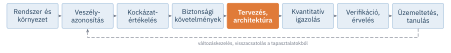
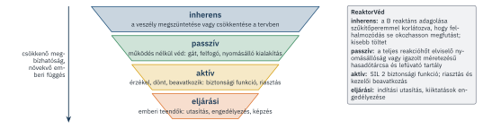
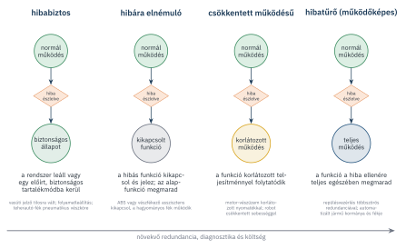
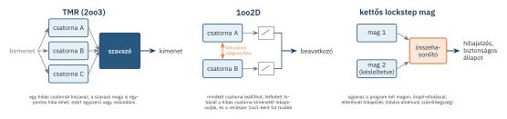
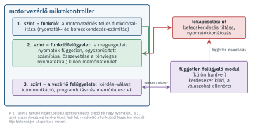
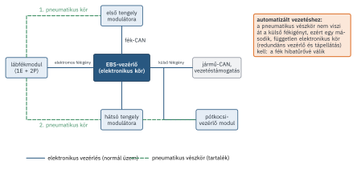

14. Biztonságos architektúrák és tervezési elvek

Az eddigi fejezetek azt mutatták meg, hogyan azonosítjuk a veszélyeket, és hogyan értékeljük egy adott terv kockázatát és megbízhatóságát. Ez a fejezet a tervezőé: milyen elvek és architektúrák vezetnek eleve biztonságos rendszerekhez? A sorrend nem mellékes. A leghatékonyabb a veszélyt magát megszüntetni vagy csökkenteni (inherens biztonság), ezt követik a működés nélkül védő passzív, majd az aktív védelmek. Az aktív védelmeknél azt kell eldönteni, mi történjen hiba esetén: álljon le a rendszer biztonságosan, kapcsoljon ki egy funkció, működjön tovább csökkentett teljesítménnyel, vagy maradjon teljesen működőképes. Ezek a döntések határozzák meg a redundancia, a diagnosztika és a közös okú hibák elleni védekezés szükséges mértékét. A fejezet a folyamatipari, a gépipari, a közúti és a repülési gyakorlat példáin, köztük a 2014-es jegyzetben bemutatott haszonjármű-fékrendszer korszerűsített elemzésén vezet végig.
A fejezet végére képes leszel
- alkalmazni a kockázatcsökkentő intézkedések hierarchiáját és az inherens biztonság elveit;
- megkülönböztetni a hibabiztos, a hibára elnémuló, a csökkentett működésű és a hibatűrő rendszereket, és egy adott funkcióhoz kiválasztani a szükséges hibaviselkedést;
- jellemezni a hardveres, információs, időbeli és szoftveres redundancia formáit, és értékelni a homogén és a diverz redundanciát;
- diagnosztikai megoldásokat választani, és összehangolni a diagnosztikai időket a hibatűrési időkerettel;
- felismerni a közös okú hibák forrásait, és tervezési intézkedéseket javasolni ellenük;
- elemezni a többszintű felügyeleti koncepciókat és a redundáns fékrendszer-architektúrákat.
14.1. A kockázatcsökkentés hierarchiája és az inherens biztonság
A 3. fejezetben láttuk, hogy az ISO 12100 háromlépcsős módszere a természeténél fogva biztonságos tervezéssel kezdi a kockázatcsökkentést, és csak ezután alkalmaz védőberendezéseket és tájékoztatást (ISO 2010). A folyamatipar ugyanezt a gondolatot négy szinttel fejezi ki (14.1. ábra): inherens (a veszély megszüntetése vagy csökkentése), passzív (működés nélkül védő eszközök, például gátak és felfogó medencék), aktív (érzékelő, döntő és beavatkozó védelmek) és eljárási (emberi teendők) intézkedések (Kletz és Amyotte 2010). Lefelé haladva a védelem egyre több elem helyes működésén és egyre inkább az emberen múlik, ezért egyre kevésbé megbízható.

Az inherens biztonság fogalmát Trevor Kletz vezette be az 1970-es években, azzal a ma is idézett gondolattal, hogy ami nincs, az nem is szivároghat el. Fő elvei (Kletz és Amyotte 2010):
- minimalizálás (intenzifikálás): kevesebb veszélyes anyag, kisebb berendezések, kisebb tárolt mennyiség;
- helyettesítés: kevésbé veszélyes anyag vagy eljárás (például vizes oldószer a gyúlékony helyett);
- mérséklés: enyhébb körülmények (alacsonyabb hőmérséklet és nyomás, hígítás), vagy olyan kialakítás, amely korlátozza a lehetséges energiát;
- a hatások korlátozása: olyan tervezés, amely a meghibásodás következményeit szűk körre korlátozza (például a térköz, a falak, a betáplálás fizikai korlátja);
- egyszerűsítés: kevesebb lehetőség a hibára, könnyen érthető, ellenőrizhető állapotok, a hibás összeszerelés lehetetlenné tétele.
Az inherens biztonság a legnagyobb hatású, de csak a tervezés korai szakaszában érvényesíthető olcsón (4. fejezet). Később a változtatás egyre drágább, és a tervezők kénytelenek aktív védelmekkel kompenzálni azt, amit a koncepcióban elmulasztottak. Az energia–gát gondolat (1.4.2. szakasz) szerint az inherens biztonság az energiaforrás csökkentését jelenti, minden további intézkedés pedig gátakat épít a forrás és a védendő érték közé.
A ReaktorVéd félszakaszos (semi-batch) reaktor: a B reaktánst folyamatosan adagolják. A tervezőcsapat a HAZOP után inherens megoldásokat is megvizsgált. A legfontosabb: az adagolás maximális áramlását egy szűkítőperem fizikailag korlátozza, így a reaktorban felhalmozódó, el nem reagált B mennyisége akkor sem elég a megfutáshoz, ha a hűtés kiesik (a hatások korlátozása). Egy másik lehetőség olyan oldószer, amelynek forráspontja a bomlási hőmérséklet alatt van, így a forralás elvonja a hőt (mérséklés); ez azonban a termék minőségét rontaná. Ha az inherens megoldások a forgatókönyvet megszüntetik vagy a következmény súlyosságát csökkentik, a LOPA kockázatcsökkentési követelménye (11.2. szakasz) és vele a biztonsági funkció SIL-je is csökken. A biztonsági funkcióra így is szükség van, de a nagyobb biztonsági tartalék és az egyszerűbb igazolás a tervezés elején tett döntés eredménye.
14.2. Hibaviselkedés: mi történjen hiba esetén?
Minden aktív biztonsági rendszer tervezésének kulcskérdése, hogy a rendszer hogyan viselkedjen, ha egy elemében hiba keletkezik. Négy alapvető stratégiát különböztetünk meg (14.2. ábra). Ezeket a 2014-es jegyzet a haszonjárművek elektronikus fékrendszerein mutatta be.

Hibabiztos (fail-safe) rendszer hiba esetén egy előre meghatározott biztonságos állapotba kerül. A klasszikus példa a vasúti jelző, amely áramkimaradáskor a gravitáció vagy egy rugó hatására tilosat mutat, és a nyugalmi áramú elv, amely szerint a védelmet áram tartja üzemkész állapotban, és bármilyen szakadás leállást okoz. A ReaktorVéd energiamentesítésre záró szelepei is hibabiztosak (10.6. szakasz). A hibabiztos stratégia feltétele, hogy létezzen biztonságos állapot, amely gyorsan és megbízhatóan elérhető. Egy vegyi reaktorban ez a betáplálás leállítása, egy repülőgépen viszont nincs ilyen: a repülés közben „leállított” gép nem biztonságos.
Hibára elnémuló (fail-silent) rendszer hiba esetén kikapcsolja a hibás funkciót, és ezt jelzi; az alapfunkció egy másik, egyszerűbb rendszer révén megmarad. Az ABS hibája esetén a fék blokkolásgátló nélkül, de működik; a vészfékező asszisztens hibája esetén a vezető figyelmeztetést kap, és a hagyományos fék változatlanul rendelkezésére áll. A hibára elnémuló stratégia lényege, hogy a hibás rendszer ne avatkozzon be hibásan: a „hallgatás” biztonságosabb, mint a téves beavatkozás.
Csökkentett működésű (fail-degraded, fail-soft) rendszer hiba esetén korlátozott teljesítménnyel folytatja a működést. A motorvezérlés vészüzemben korlátozott nyomatékkal engedi a járművet a szervizig (limp home), a kollaboratív robot érzékelőhiba esetén csökkentett sebességgel dolgozik, vagy egy kétcsatornás folyamatirányítás az egyik csatorna kiesése után egycsatornásként, de szigorúbb felügyelettel működik.
Hibatűrő vagy működőképes (fail-operational) rendszer a hiba ellenére teljes egészében ellátja a funkcióját. Erre ott van szükség, ahol nincs biztonságos állapot, vagy az csak a funkció további működésével érhető el: a repülésvezérlésben, a magasan automatizált járművek kormány- és fékrendszerében, ahol a rendszernek a hiba után is biztonságos helyre kell vinnie a járművet (minimal risk manoeuvre), vagy a vasúti jelzőrendszerek rendelkezésre állást igénylő részein (UNECE 2021).
A választás a funkciótól és a biztonságos állapot létezésétől függ, nem a műszaki ízléstől. Az SAE J3016 automatizálási szintjei (16. fejezet) ebből a szempontból is határvonalat jelentenek: amíg a vezető a tartalék (2. szintig), az automatizált funkció lehet hibára elnémuló; ha a rendszernek kell átvennie a tartalék szerepét is (3. szinttől), legalább egy átmeneti időre hibatűrőnek kell lennie (SAE International 2021).
14.3. Redundancia
A redundancia az a többlet, amely a funkcióhoz önmagában nem szükséges, de hiba esetén lehetővé teszi a funkció fenntartását vagy a hiba felismerését (Avižienis és mtsai. 2004). Négy formája van:
- hardveres redundancia: több fizikai csatorna (érzékelő, számítóegység, beavatkozó);
- információs redundancia: többletinformáció az adatokban (paritás, ellenőrző összeg, hibajavító kód, biztonsági kommunikációs protokoll sorszámmal és időbélyeggel);
- időbeli redundancia: a művelet megismétlése (például egy számítás kétszeri elvégzése, egy üzenet ismételt küldése), amely az átmeneti hibák ellen véd;
- szoftveres redundancia: ugyanazon funkció eltérő megvalósításai (N-verziós programozás, helyreállító blokkok).
A hardveres redundancia lehet statikus (a csatornák egyidejűleg működnek, és szavazás dönti el a kimenetet) vagy dinamikus (a hibát észlelik, és átkapcsolnak a tartalékra). A legismertebb statikus architektúra a háromszoros moduláris redundancia (triple modular redundancy, TMR): három csatorna és egy többségi szavazó, amely egy hibás csatornát „kiszavaz” (14.3. ábra). A TMR a 2oo3 struktúra számítástechnikai megfelelője (9.3. szakasz). Gyenge pontja a szavazó, amely egypontos hiba lehet; ezért a szavazót vagy nagyon egyszerűre és ellenőrizhetőre tervezik, vagy maga is redundáns. A folyamatiparban elterjedt 1oo2D architektúrában két csatorna kölcsönösen diagnosztizálja egymást; felfedett hiba esetén a hibás csatorna kimenetét lekapcsolják, és a rendszer egycsatornásként, de szigorúbb felügyelettel működik tovább. A gépjárművekben gyakori a kettős lockstep mikrokontroller, amelyben két processzormag ugyanazt a programot futtatja kis időeltolással, és egy összehasonlító áramkör az első eltérésnél hibát jelez: ez egy hibára elnémuló számítóegység.

A többcsatornás rendszerekben sajátos veszély a bizánci hiba: egy hibás csatorna a többi csatornának különböző értékeket közöl, így azok nem tudnak egyetérteni. Lamport, Shostak és Pease klasszikus eredménye szerint \(f\) ilyen hiba tolerálásához legalább \(3f + 1\) csatorna és megfelelő kommunikációs protokoll szükséges, ha az üzenetek nincsenek hitelesítve (Lamport és mtsai. 1982). Ezért van a nagy integritású repülésvezérlő és űrtechnikai rendszerekben négy vagy több csatorna, illetve gondosan tervezett, hitelesített adatcsere.
14.3.1. Homogén és diverz redundancia
A homogén redundancia azonos csatornákat használ. Véletlenszerű hardverhibák ellen hatékony, de a közös okú hibák és különösen a szisztematikus hibák (tervezési, szoftverhibák) ellen nem: ha a hiba a tervben van, minden csatornában ott van. A diverz redundancia eltérő technológiájú, eltérő tervezésű vagy eltérő elven működő csatornákat használ, így egy tervezési hiba kisebb valószínűséggel érinti mindegyiket.
A diverzitás a repülésben a legkidolgozottabb. Az Airbus repülésvezérlő rendszerében két különböző típusú számítógép működik, eltérő processzorokkal, eltérő csapatok által, eltérő eszközökkel fejlesztett szoftverrel (Traverse és mtsai. 2004). A Boeing 777 elsődleges repülésvezérlő számítógépe „háromszor hármas” redundanciájú: három csatorna, mindegyikben három, különböző processzorcsaládra épülő számítási út (Yeh 1996). A szoftveres diverzitás hatékonysága azonban korlátozott. Knight és Leveson kísérletében egymástól függetlenül fejlesztett programváltozatok sokkal gyakrabban hibáztak ugyanazon bemeneteknél, mint ahogy függetlenségük esetén várható lett volna (Knight és Leveson 1986); a programozók hajlamosak ugyanazokat a nehéz eseteket elrontani. Az N-verziós programozás ezért nem helyettesíti a gondos fejlesztést (Avižienis 1985), és a diverzitás akkor a leghatékonyabb, ha különböző elveken alapul (például egy összetett szabályozó mellett egy egyszerű, fizikai határértéket figyelő felügyelet).
14.4. Diagnosztika
A diagnosztika a rejtett hibákból felfedett hibákat csinál: csökkenti a \(\lambda_{DU}\)-t, és ezzel a PFD-t vagy a PFH-t (13. fejezet). A gyakori diagnosztikai megoldások:
- plauzibilitás-ellenőrzés: a mért érték fizikailag lehetséges-e (tartomány, változási sebesség), összhangban van-e más mérésekkel;
- csatornák összehasonlítása: két érzékelő eltérése egy határértéknél nagyobb (kölcsönös diagnosztika);
- élő nulla és vonalfelügyelet: a 4–20 mA-es hurokban a 3,6 mA alatti áram szakadást, a 21 mA feletti zárlatot jelez;
- tesztimpulzusok: a kimeneteket rövid impulzusokkal ellenőrzik, hogy le tudnak-e kapcsolni;
- memória- és processzortesztek: a programmemória ellenőrző összege, RAM-tesztek, utasításkészlet-tesztek;
- programfutás-felügyelet: az egyszerű watchdog csak azt ellenőrzi, hogy a program időben jelentkezik-e, az ablakos watchdog azt is, hogy nem túl korán, a logikai programfutás-felügyelet pedig azt, hogy a program a helyes sorrendben járja-e be az ellenőrzőpontokat.
Az IEC 61508-2 A melléklete minden megoldáshoz megadja az elérhető diagnosztikai lefedettséget (alacsony: 60%, közepes: 90%, nagy: 99%) (IEC 2010). Az egyszerű watchdog például csak alacsony lefedettséget ad, a logikai programfutás-felügyelet közepeset vagy nagyot.
14.4.1. A diagnosztika időzítése
A diagnosztika csak akkor ér valamit, ha a hibát időben felismeri, és a rendszer időben eljut a biztonságos állapotba. Az ISO 26262 ezt a hibatűrési időkerettel (fault tolerant time interval, FTTI) fejezi ki: ennyi idő telhet el egy hiba keletkezésétől a veszélyes esemény bekövetkezéséig, ha a biztonsági mechanizmusok nem lépnek közbe. A hiba felismerésének ideje és a hibareakció ideje együtt nem haladhatja meg az FTTI-t (ISO 2018). A folyamatiparban ugyanezt a folyamatbiztonsági idő (process safety time) fejezi ki, amelyen belül a biztonsági funkciónak le kell állítania a folyamatot; a ReaktorVéd 10 másodperces válaszideje (4. fejezet) ebből következik. Ha egy diagnosztikai teszt csak óránként fut, de a hiba néhány másodperc alatt veszélyes helyzetet teremthet, a teszt a PFD-számításban nem tekinthető diagnosztikának.
14.5. Védekezés a közös okú hibák ellen
A 10–13. fejezet számításai egyértelművé tették, hogy a redundáns rendszerekben a közös okú meghibásodás gyakran uralja a kockázatot. A közös okok főbb forrásai (Mosleh és mtsai. 1988; IEC 2010):
- környezet: hőmérséklet, rezgés, nedvesség, elektromágneses zavarok, tűz, elárasztás, amely egyszerre több csatornát ér;
- közös támogató rendszerek: tápellátás, műszerlevegő, hűtés, kommunikációs hálózat;
- tervezés: azonos tervezési vagy szoftverhiba, azonos alkatrész-gyengeség;
- gyártás és telepítés: azonos gyártási sorozat, azonos telepítési hiba;
- üzemeltetés és karbantartás: ugyanaz a hibás kalibrálás vagy beállítás minden csatornán, ugyanaz a személy, ugyanaz a hibás eljárás.
Az ellenük alkalmazható intézkedések három csoportba sorolhatók: szétválasztás (térbeli elkülönítés, külön kábelút, külön tápellátás, külön szekrény), diverzitás (eltérő technológia, gyártó, elv vagy fejlesztőcsapat) és függetlenség a folyamatokban (eltolt időpontú karbantartás különböző személyekkel, független ellenőrzés, a változtatások gondos kezelése). Az IEC 61508-6 D mellékletének pontozásos eljárása éppen ezeket az intézkedéseket értékeli, és a pontszámból adja a β-tényezőt (10.6. szakasz). A gépiparban az ISO 13849-1 hasonló listát használ, amelyen legalább 65 pontot kell elérni (ISO 2023). A közös okú hibák elleni védekezés tehát nem csak számítási kérdés: minden pont egy konkrét tervezési vagy szervezeti döntést jelent.
14.6. Többszintű felügyeleti koncepciók: az E-Gas példája
Az elektronikus gázpedál (drive-by-wire) bevezetésével a motor nyomatékát már egy szoftver számolja ki, és egy szoftverhiba nem kívánt gyorsítást okozhat. A német autóipar ezért egy szabványosított, háromszintű felügyeleti koncepciót dolgozott ki, amely az ISO 26262 előtt keletkezett, de máig a biztonságos járműelektronika egyik mintapéldája (14.4. ábra) (EGAS Workgroup 2015).

- 1. szint (funkció): a motorvezérlés teljes funkcionalitása, a vezető kívánságából és a sok egyéb bemenetből a nyomaték és a befecskendezés kiszámítása. Ez a bonyolult, gyakran változó szoftver.
- 2. szint (funkciófelügyelet): egy egyszerűsített, a funkciótól eltérő módon számított megengedett nyomaték, amelyet összevetnek a tényleges (az 1. szint által kért) nyomatékkal. Eltérés esetén nyomatékkorlátozás vagy a befecskendezés tiltása következik. A 2. szint ugyanazon a processzoron fut, de külön memóriaterületen, védett adatokkal.
- 3. szint (a vezérlő felügyelete): egy független felügyelő modul (külön hardver) kérdés–válasz kommunikációval ellenőrzi, hogy a fő processzor helyesen működik-e: helyesen hajtja-e végre az utasításokat, és lefut-e a 2. szint programja. Hiba esetén a felügyelő modul a fő processzortól függetlenül kapcsolja le a beavatkozókat.
A koncepció három általános tervezési elvet testesít meg: a bonyolult funkciót egy egyszerűbb, diverz felügyelet ellenőrzi; a felügyeletet egy független hardver felügyeli; és a biztonságos állapotba vezető út független a felügyelt funkciótól. Ugyanezt a mintát követi a ReaktorVéd is, ahol a bonyolult BPCS-t egy egyszerű, független biztonsági funkció felügyeli, és a gépek biztonsági vezérlései, ahol a funkcionális vezérlő mellett egy biztonsági vezérlő gondoskodik a biztonságos leállásról.
14.7. Esettanulmány: haszonjármű-fékrendszerek
A 2014-es jegyzet Fülep Tímea által írt fejezetei a haszonjárművek elektronikus fékrendszerein mutatták be a hibaviselkedési stratégiákat. Ez a példa ma is tanulságos, sőt az automatizált vezetés miatt aktuálisabb, mint valaha.
Az Európában az 1990-es évek második fele óta elterjedt elektronikus fékrendszer (EBS) fő eleme a központi vezérlőegység, amely saját fék-CAN-hálózaton irányítja a tengelyek fékmodulátorait és a pótkocsi-vezérlő modult (14.5. ábra). Normál üzemben a vezető fékigényét a lábfékmodul elektromos jelként adja át, és az elektronika számolja ki a fékerő-elosztást, az ABS- és a stabilitási beavatkozásokat. A redundancia szempontjából a rendszer 1E+2P felépítésű: egy elektronikus kör és két pneumatikus vészkör. Ha az elektronikus körben hiba keletkezik, a rendszer a hiba súlyosságától függően részleges vagy teljes pneumatikus vészüzembe kapcsol, amelyben az alapfékezés teljes értékű, de az elektronikus funkciók (ABS, fékerő-elosztás, stabilitásvezérlés) nem érhetők el. Ez a fékrendszer hibabiztos: egyszeres hiba esetén is teljesíti a jogszabályban előírt fékhatást (UNECE 2016). Az ABS és a stabilitásvezérlés önmagában hibára elnémuló: hiba esetén kikapcsol, és az alapfék megmarad.

A 2014-es jegyzet már rámutatott, hogy költségokokból vita folyik az egyik pneumatikus kör elhagyásáról (1E+1P), amely a jogszabályi előírásokat még kielégíti, és megtartja a hibabiztos tulajdonságot. Az automatizált vezetés szempontjából azonban mindkét változatnak ugyanaz a gyengesége: a pneumatikus vészkör csak a vezető lábának parancsát viszi át, a külső, elektronikus fékigényt nem. Ha a jármű vezetője nem figyel (mert a rendszer vezet), az elektronikus kör hibája után nincs, aki fékezzen. Egy magasan automatizált járműben a fékrendszernek ezért hibatűrőnek kell lennie: egy második, független elektronikus vezérlési körre van szükség, saját tápellátással és kommunikációval, amely az első kör kiesése után is végrehajtja a külső fékigényt, legalább addig, amíg a jármű egy minimális kockázatú manőverrel biztonságosan megáll (UNECE 2021). A hibaviselkedési stratégia tehát nem a rendszer, hanem a funkció és a felelősségmegosztás tulajdonsága: ugyanaz a fék a vezetővel hibabiztos lehet, a vezető nélkül hibatűrőnek kell lennie.
A vészfékező asszisztens a vezető kiegészítője (2. szintig), ezért hibára elnémuló: ha a radar vagy a kamera hibás, vagy az érzékelés megbízhatatlan (például erős esőben), a funkció kikapcsol, a műszerfalon jelzés jelenik meg, és a vezető a hagyományos fékkel fékez. A téves fékezés elleni védelem ugyanakkor kritikus (10. fejezet): a rendszernek akkor is el kell némulnia, ha nem biztos a dolgában. A fékrendszer maga (a fékerő-erősítő, a stabilitásvezérlő hidraulikája) a vezetővel együtt hibabiztos. Ha ugyanezt a funkciót egy magasan automatizált jármű látja el, ahol a vezető nem tartalék, a fékrendszer és a környezetérzékelés is hibatűrő kell legyen: redundáns érzékelés, redundáns számítóegység és redundáns fékbeavatkozás.
A kollaboratív robot biztonsága elsősorban inherens: a könnyű, lekerekített élű kar, a korlátozott tömeg és sebesség miatt egy ütközés ereje eleve kisebb (4. fejezet). Erre épülnek az aktív funkciók: az erő- és teljesítménykorlátozás, a sebesség- és távolságfelügyelet és a biztonságosan felügyelt megállás, amelyeket a robotvezérlő biztonsági része kétcsatornásan, kölcsönös diagnosztikával valósít meg (ISO 2025, 2016). Hiba esetén a robot hibabiztosan megáll (a hajtások biztonságos nyomatékmentesítése, STO). A cella tervezésének fő kérdése, hogy a biztonsági funkciók ne állítsák le feleslegesen a munkát (12.6. szakasz), mert a gyakori leállás a védelem megkerülésére ösztönöz.
- A kockázatcsökkentés hierarchiája: inherens, passzív, aktív, eljárási; a felső szintek kevesebb elem működésén múlnak, ezért megbízhatóbbak. Az inherens biztonság a tervezés elején a legolcsóbb.
- A hibaviselkedés négy stratégiája: hibabiztos (biztonságos állapot), hibára elnémuló (a hibás funkció kikapcsol), csökkentett működésű és hibatűrő (a funkció megmarad). A választás attól függ, létezik-e biztonságos állapot, és ki a tartalék.
- A redundancia lehet hardveres, információs, időbeli és szoftveres, statikus vagy dinamikus; a homogén redundancia a szisztematikus hibák ellen nem véd, a diverz redundancia igen, de a szoftveres diverzitás hatékonysága korlátozott.
- A diagnosztika a rejtett hibákat felfedett hibákká alakítja; a felismerési és a reakcióidőnek a hibatűrési időkereten vagy a folyamatbiztonsági időn belül kell maradnia.
- A közös okú hibák ellen szétválasztás, diverzitás és a folyamatok függetlensége véd.
- A többszintű felügyelet (E-Gas) mintája: diverz felügyelet, független hardveres felügyelő, független lekapcsolási út.
- Az automatizált vezetéshez a hibabiztos 1E+2P fékrendszer helyett hibatűrő, kétszeres elektronikus vezérlésű fék kell.
- Mondj egy-egy példát hibabiztos, hibára elnémuló, csökkentett működésű és hibatűrő rendszerre a saját szakterületedről! Miért éppen az a stratégia a megfelelő?
- Miért nem lehet egy repülőgép repülésvezérlő rendszere hibabiztos?
- Egy TMR-rendszer csatornái azonos szoftvert futtatnak. Milyen hibák ellen véd, és milyenek ellen nem?
- Egy hőmérséklet-távadó hibáját óránként egyszer futó teszt ismeri fel. A folyamatbiztonsági idő 2 perc. Tekinthető-e ez a teszt diagnosztikának a PFD-számításban?
- Sorolj fel öt konkrét intézkedést a ReaktorVéd két gyorszáró szelepének közös okú meghibásodása ellen, és sorold be őket a szétválasztás, a diverzitás és a folyamatok függetlensége csoportokba!
Megoldás
- Például: hibabiztos a felvonó fékje (áramkimaradáskor rugó fékez); hibára elnémuló egy kerékpár elektromos rásegítése (hiba esetén kikapcsol, pedálozni lehet); csökkentett működésű egy szerver RAID-tömbje (egy lemez kiesése után lassabban, de működik); hibatűrő egy kórházi szünetmentes tápellátás. A választás mindig attól függ, mi történik a funkció elvesztésekor, és van-e biztonságos állapot.
- Mert repülés közben nincs biztonságos állapot, amelybe a rendszer egyszerűen „leállhatna”; a gép irányíthatóságát a hiba után is fenn kell tartani a leszállásig. Ezért a repülésvezérlés hibatűrő, többszörös és diverz redundanciával.
- Véd a független véletlenszerű hardverhibák ellen (egy csatorna hibáját kiszavazza), és a nem közös átmeneti hibák ellen. Nem véd a szoftver tervezési hibái ellen (mindhárom csatorna ugyanúgy hibázik), a közös okú hardverhibák ellen (például közös táp vagy túlmelegedés), és a szavazó hibája ellen.
- Nem. A hiba felismerésének ideje (legfeljebb egy óra) sokkal hosszabb a folyamatbiztonsági időnél, ezért a hiba felismerése előtt bekövetkező igény veszélyes eseményhez vezethet. A számításban ezt a hibát rejtettnek kell tekinteni, vagy sokkal gyakoribb diagnosztika kell.
- Szétválasztás: külön mágnesszelep és külön levegőellátás a két működtetőnek; külön kábelút és tápellátás. Diverzitás: eltérő típusú vagy gyártójú szelepek (például egy golyóscsap és egy pillangószelep). A folyamatok függetlensége: eltolt időpontú karbantartás és proof teszt, különböző szerelőkkel; a karbantartás utáni működéspróba független ellenőrzéssel.
- Kletz, T., Amyotte, P. (2010): Process Plants: A Handbook for Inherently Safer Design, 2. kiadás. CRC Press (Kletz és Amyotte 2010).
- Avižienis, A. et al. (2004): Basic concepts and taxonomy of dependable and secure computing. IEEE TDSC – a hibatűrés fogalomrendszere (Avižienis és mtsai. 2004).
- EGAS Workgroup (2015): Standardized E-Gas Monitoring Concept for Gasoline and Diesel Engine Control Units, 6.0 változat (EGAS Workgroup 2015).
- Traverse, P. et al. (2004): Airbus fly-by-wire: A total approach to dependability (Traverse és mtsai. 2004); Yeh, Y. C. (1996): Triple-triple redundant 777 primary flight computer (Yeh 1996).
- Knight, J. C., Leveson, N. G. (1986): An experimental evaluation of the assumption of independence in multiversion programming. IEEE TSE (Knight és Leveson 1986).